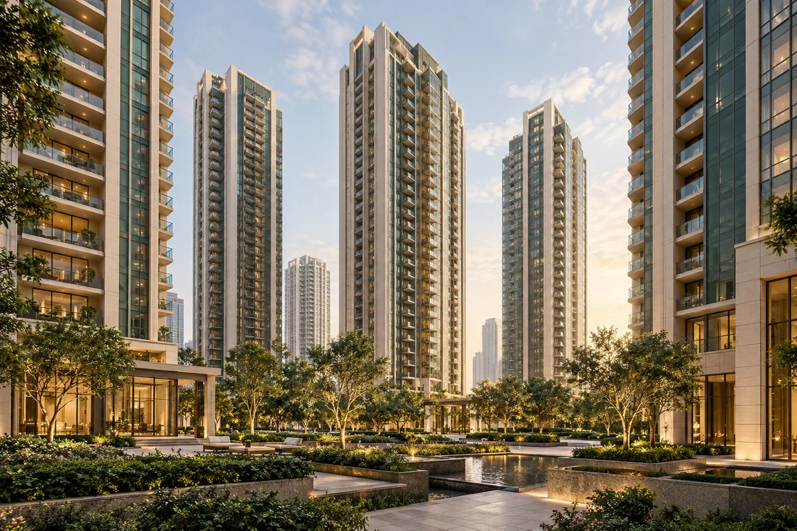
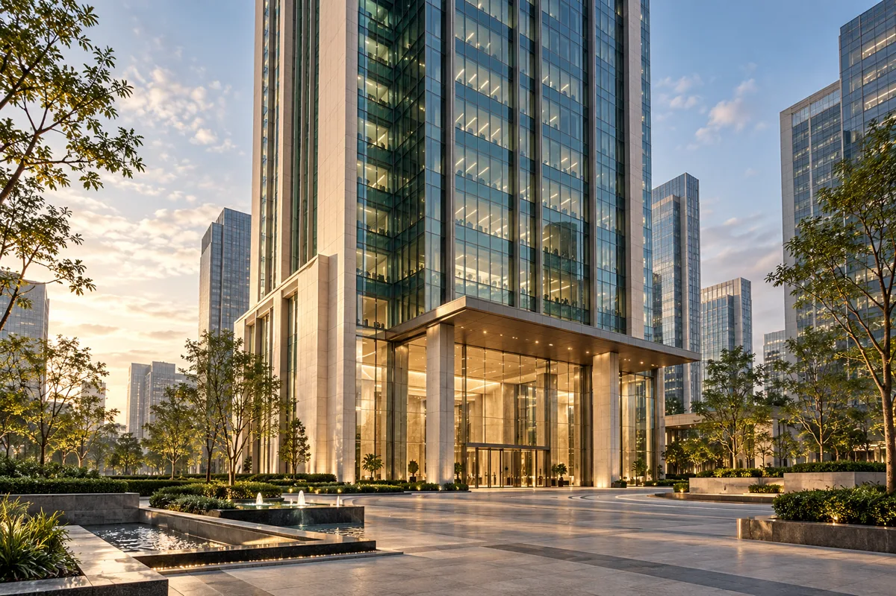
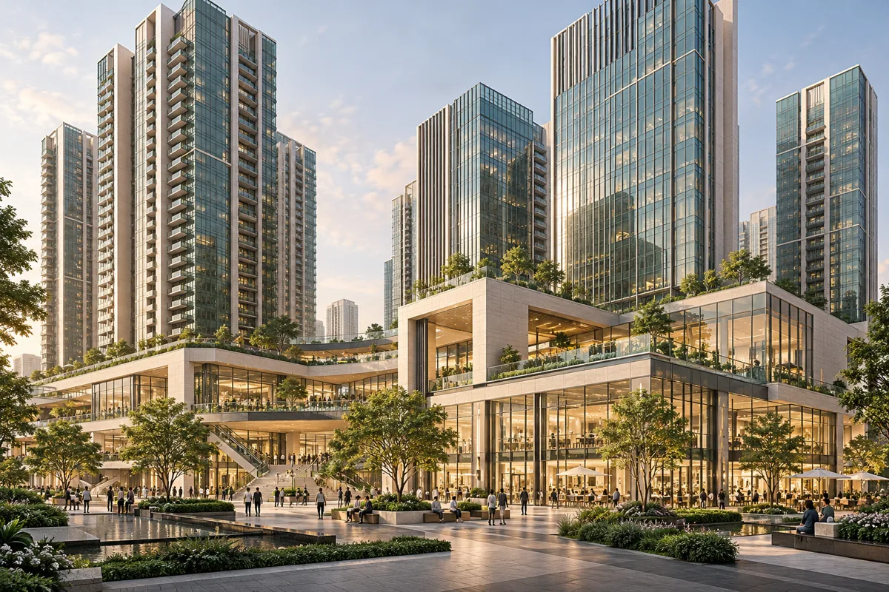
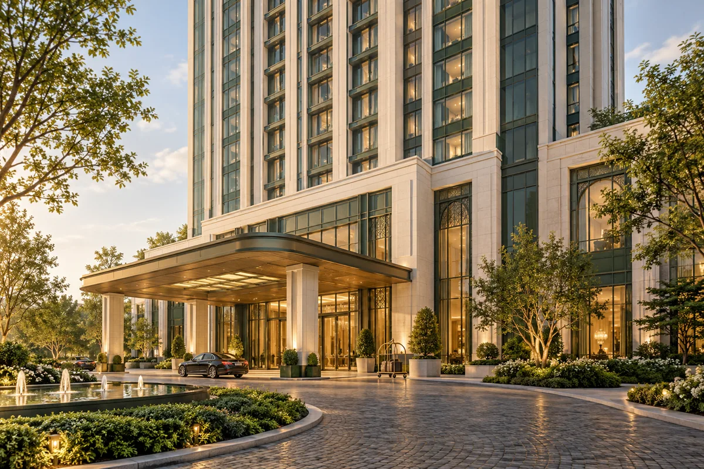
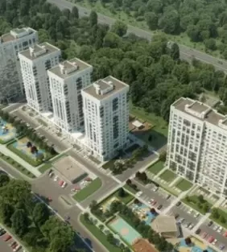
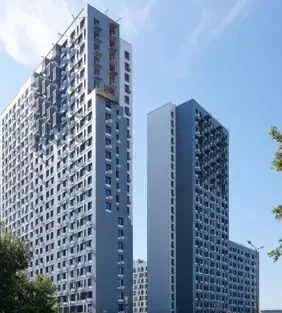
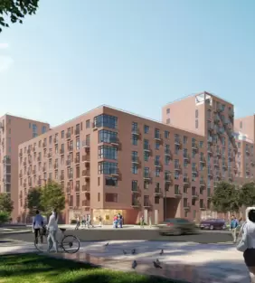
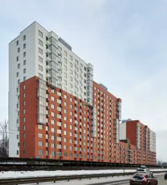

Подбираем оборудование для высотных жилых комплексов, бизнес-центров, МФК и гостиниц. Нужная скорость зависит от высоты подъёма, остановок и количества пассажиров.

Иллюстрация · Высотный жилой комплекс
Задача здания / Высотный ЖК
Чтобы жителям было удобно утром и вечером
Утром жители спускаются на работу, вечером возвращаются домой. Подбираем скорость, количество и вместимость кабин с учётом этих нагрузок.
Что учитываем при подборе
Этажность и количество квартир
Количество лифтов и остановок
Размеры и отделка кабин, удобство для маломобильных пассажиров

Иллюстрация · Бизнес-центр
Задача здания / Бизнес-центр
Удобный подъём для сотрудников и гостей
В бизнес-центре многие приезжают к началу рабочего дня. Учитываем утренний поток, поездки между этажами и совместную работу нескольких лифтов.
Что учитываем при подборе
Сколько людей работает на каждом этаже
Какие этажи обслуживает каждая группа лифтов
Требования к контролю доступа

Иллюстрация · Многофункциональный комплекс
Задача здания / МФК
Для жителей, сотрудников и посетителей комплекса
В одном комплексе люди едут в квартиры, офисы и общественные зоны. Подбираем лифты с учётом этих маршрутов и нагрузки на каждую часть здания.
Что учитываем при подборе
Жилые, офисные и общественные зоны
Маршруты пассажиров и нужные остановки
Поездки посетителей, сотрудников и служб здания

Иллюстрация · Гостиница
Задача здания / Гостиница
Для гостей с багажом и работы персонала
Гостям нужны удобные кабины для поездок с багажом, персоналу — лифты для повседневной работы. Учитываем оба сценария и требования к отделке.
Что учитываем при подборе
Категория гостиницы и количество гостей
Гостевые и служебные маршруты
Вместимость и оформление кабин
02 / Выбор оборудования
Лифты для высотных проектов
Сравните кабины, скорость и грузоподъёмность представленных лифтов. Подберём подходящую модель и рассчитаем стоимость поставки и монтажа.
Фото кабины КМЗ добавим позже. Это место для каталожного изображения.
Скоростной лифт российского завода
У «Альтиуса» есть варианты со скоростью до 4 м/с. Серия предназначена для жилых, офисных и общественных зданий; отделку и способ установки выбирают под объект.
Скорость линейки
1–4 м/с
Грузоподъёмность
400–1000 кг
Характеристики — из каталога КМЗ. Скорость и способ установки зависят от выбранного варианта «Альтиуса».
Заводской каталог; актуальность исполнения — при подборе
IFE / METIS-HS
3–6 м/с
800–2000 кг*
До 200 / 300 м*
Техническая таблица серии
* IFE: 3–4 м/с — до 200 м, 800–2000 кг; 5–6 м/с — до 300 м, 1350–2000 кг. Для ЩЛЗ указана высота здания, для METEOR и IFE — высота подъёма.
В каталогах приведены характеристики разных вариантов лифтов. Максимальные скорость, грузоподъёмность и высота не всегда сочетаются в одной модели. При расчёте укажем параметры конкретного оборудования.
В проекте указан другой производитель?
Пришлите ТЗ или название модели. Рассмотрим ваше оборудование и подготовим предложение по поставке и монтажу.
03 / Почему ЛКС
Один подрядчик на проектирование, поставку и монтаж
Проектирование, поставку и монтаж организуем в рамках одного проекта. Поможем подготовить документы и пройти ввод лифтов в эксплуатацию.
Проектирование
Проект — без отдельной оплаты
Если заказываете у нас поставку и монтаж лифтов, проектирование не нужно оплачивать отдельно. Состав проектных работ укажем в предложении.
Условие: договор поставки и монтажа
Комплектация
Основные запасные части — вместе с лифтом
Комплект основных запасных частей — ЗИП — поставляем вместе с оборудованием. Перечень деталей укажем в спецификации.
Состав ЗИП — в спецификации
Закупка
Показываем стоимость оборудования и работ
В смете укажем, сколько стоят оборудование, поставка и монтаж. Будет понятно, что входит в цену и какие работы оплачиваются отдельно.
Рассматриваем форму договора заказчика
Опыт
Учитываем особенности сложных объектов
Опыт работы со сложными объектами помогает заранее обсудить состав оборудования и работ и включить их в расчёт.
Расчёт с учётом вашего объекта
04 / Расчёт стоимости
Рассчитаем поставку и монтаж для вашего объекта
Пришлите ТЗ, чертежи или расскажите о здании. Подготовим коммерческое предложение: какие лифты подойдут, что входит в поставку и сколько стоят оборудование и работы.
ЛКС / Предложение по объектуКП
Что включим в предложение
01
Исходные данные
Назначение здания, шахты, высота подъёма и остановки
02
Оборудование
Производитель, серия, количество, параметры и отделка
03
Состав и стоимость работ
Поставка, монтаж, пусконаладка — что входит в цену и оплачивается отдельно
04
Сроки, оплата и гарантия
График, оплата, гарантия и порядок приёмки
Пример структуры КП для согласования прототипа. Стоимость рассчитывается по объекту.
Спроектируем, поставим и смонтируем лифты, поможем с вводом в эксплуатацию. При замене учтём демонтаж старого оборудования. Полный перечень работ закрепим в договоре.
05 / Наши объекты
Последние работы
Объекты из портфолио ЛКС за 2023–2024 годы: поставка и монтаж лифтов для жилых комплексов.

Визуализация ЖК из портфолио ЛКС
Жилой комплекс
«Серебро»
18 лифтов
Поставка и монтаж

Фото здания из портфолио ЛКС
Жилой комплекс · ЖД2
«Облака 2.0»
14 лифтов
Поставка и монтаж

Визуализация ЖК из портфолио ЛКС
Жилой комплекс · Ярославль
«Сердце Ярославля»
12 лифтов
Поставка и монтаж

Фото здания из портфолио ЛКС
Жилой комплекс · Люберцы
«Новотомилино»
12 лифтов
Поставка и монтаж
В портфолио не указаны серии и скорости лифтов на этих объектах. Здесь показываем опыт поставки и монтажа.
Опыт монтажа оборудования
FUJISTAR · ЩЛЗ · КМЗ · Могилёвлифтмаш · Метеор
06 / Как мы работаем
От первого обращения до запуска лифтов
Сначала подберём оборудование и рассчитаем стоимость. Затем оформим договор, организуем поставку и монтаж, поможем с вводом в эксплуатацию.
01
Рассказываете об объекте
Присылаете ТЗ, чертежи или те сведения о здании, которые уже есть.
Данные для подбора оборудования
02
Подбираем лифты и считаем стоимость
Вы получаете модели лифтов, комплектацию и расчёт стоимости поставки и монтажа.
Коммерческое предложение с расчётом
03
Оформляем договор и поставку
Согласуем комплектацию, сроки, оплату и порядок приёмки. Организуем поставку оборудования.
Договор и спецификация
04
Монтируем и запускаем
Выполняем монтаж и пусконаладку, когда площадка готова к работам.
Смонтированное оборудование и акты работ
05
Помогаем с вводом в эксплуатацию
Помогаем пройти ввод и передаём документы, предусмотренные договором.
Документы по выполненным работам
07 / Договор и гарантия
Зафиксируем комплектацию, сроки и оплату в договоре
До подписания договора разберём модель, смету и график работ. Вы сможете заранее проверить условия поставки и монтажа.
01 /
Понятно, что покупаете
В спецификации укажем модель, её характеристики, отделку кабины, комплект оборудования и запасных частей.
02 /
Понятно, за что платите
Размер предоплаты и последующие платежи укажем в договоре вместе со сроками и порядком приёмки. Готовы рассмотреть вашу форму договора.
03 /
Понятны условия гарантии
Даём гарантию на оборудование и работы до 5 лет. Срок, условия и порядок обслуживания зависят от модели и региона объекта.
Документы компании
Документы для проверки подрядчика
На действующем сайте ЛКС размещены материалы СРО и сертификат ISO. Актуальные документы и область их действия нужно проверить перед публикацией.
Документы СРОМесто для актуальной выписки и сведений о работах
Сертификаты и письмаМесто для подтверждённых документов и отзывов
ЛифтКомфортСервис · с 2018 годаМосква · поставки оборудования по России
08 / Частые вопросы
Что обычно спрашивают перед заказом
Какую скорость выбрать для здания?+
Для подбора нужны высота подъёма, количество остановок, назначение здания и предполагаемое число пассажиров. Вместе со скоростью выбирают количество и вместимость кабин. Если этих данных пока нет, начните с описания объекта.
У российских заводов есть высокоскоростные лифты?+
Да. ЩЛЗ сертифицировал лифт на 8 м/с, а у КМЗ в серии «Альтиус» есть варианты до 4 м/с. Рассмотрим их при подборе и проверим доступность нужной комплектации.
Из чего складывается стоимость?+
На цену влияют модель и количество лифтов, высота подъёма, остановки, отделка, доставка и объём монтажа. В предложении отдельно покажем оборудование и работы. При заказе поставки и монтажа проектирование не оплачивается отдельно.
Какие сроки поставки и монтажа?+
Для российских лифтов ориентируемся на поставку от 30 дней, для китайских — от 90 дней, монтаж — от 30 дней. Это общие сроки компании. Для конкретного высокоскоростного лифта они зависят от модели, изготовления, доставки и готовности объекта. Согласованный график укажем в договоре.
Как проверить комплектацию и документы на оборудование?+
Сравните ТЗ и спецификацию: серия, скорость, грузоподъёмность, высота подъёма, размеры шахт, отделка и запасные части должны соответствовать выбранному лифту. Документы о соответствии тоже проверяют для конкретного оборудования. Ссылки на каталоги есть в карточках выше.
Какая гарантия и что с запчастями?+
Гарантия на оборудование и работы — до 5 лет. Точный срок и условия укажем в договоре. Основной комплект запасных частей поставляем вместе с лифтом; перечень будет в спецификации. Обслуживание обсуждаем с учётом модели и региона.
Можно работать по нашей форме договора?+
Да, можем рассмотреть вашу форму договора. Обсудим требования, стоимость, сроки, оплату и приёмку. Если нужна банковская гарантия, скажите об этом сразу: отдельно разберём возможность её предоставления.
Можно обратиться без ТЗ и чертежей?+
Да. Оставьте контакт и расскажите, что нужно сделать. Если знаете город, тип здания, этажность или размеры шахт, добавьте их. Неизвестные параметры можно пропустить.
09 / Ваш проект
Расскажите о здании — подберём лифты и рассчитаем стоимость
Готовое ТЗ можно прикрепить сразу. Если ТЗ пока нет, ответьте на четыре вопроса о здании и оставьте контакт — поможем с подбором.
Что мы подготовим
Подходящую модель и её характеристики
Комплектацию и варианты отделки
Расчёт стоимости оборудования и работ
Сроки и условия поставки и монтажа
Прикрепите ТЗ или расскажите, что нужно
Подбор лифтовШаг 1 из 5
Здание
Высота
Лифты
Этап
Контакт
●Это прототип. Контакты и файлы никуда не отправляются.